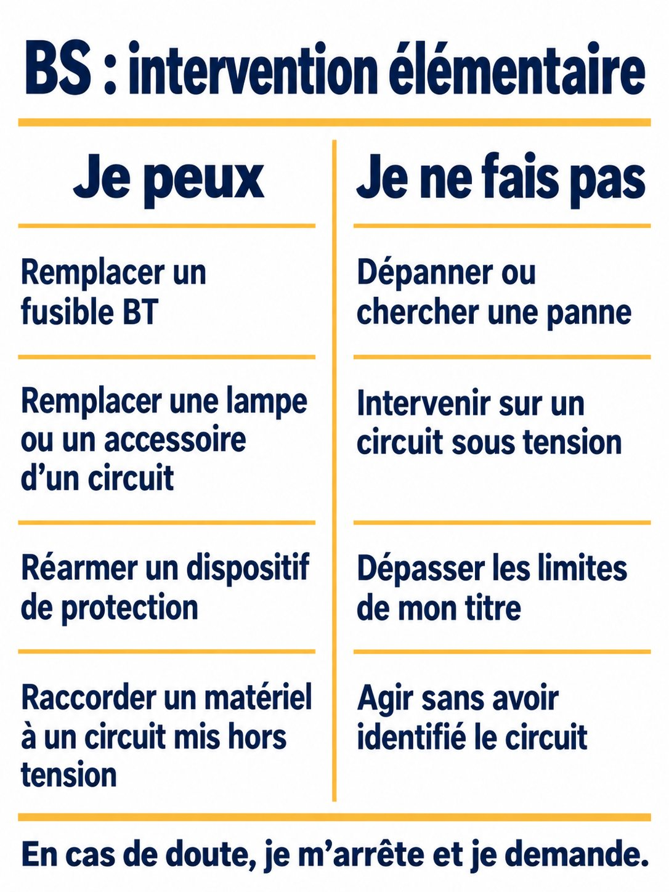
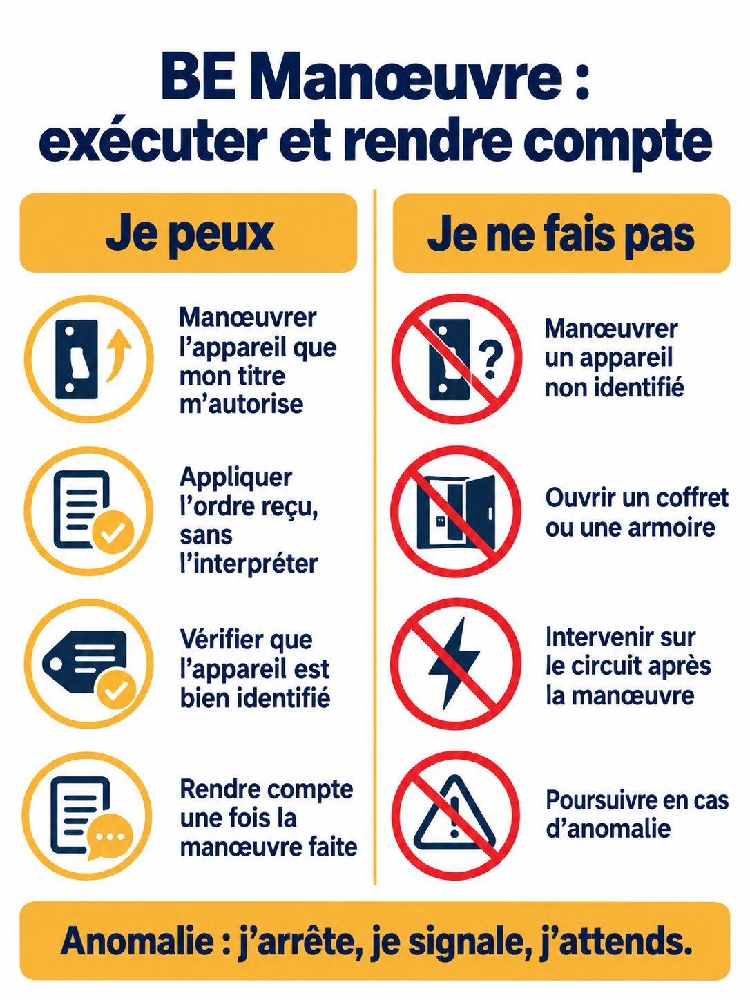
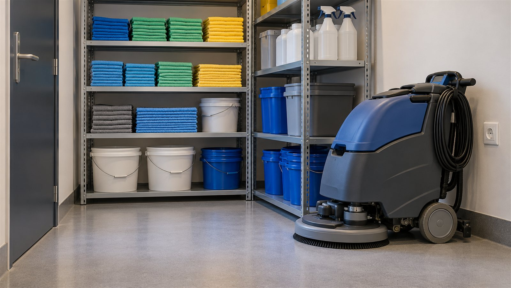
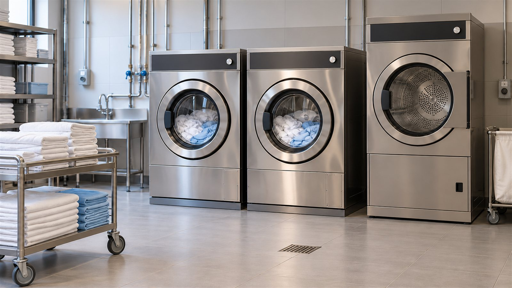
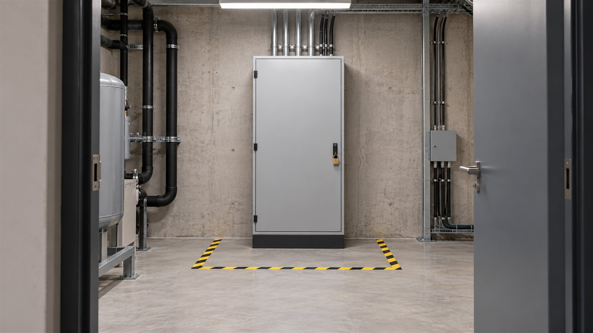
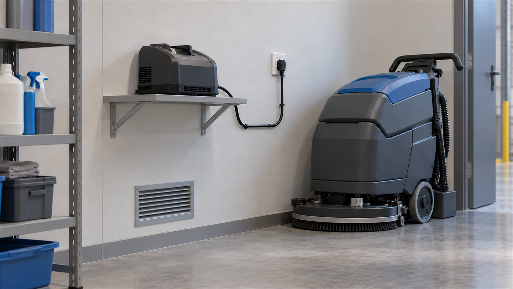
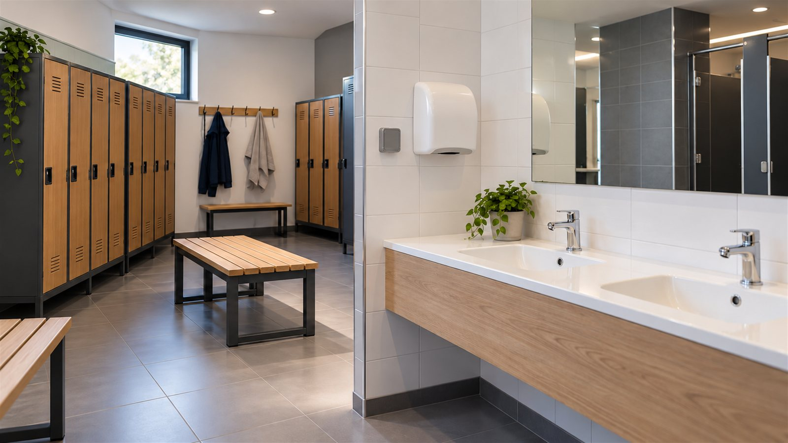
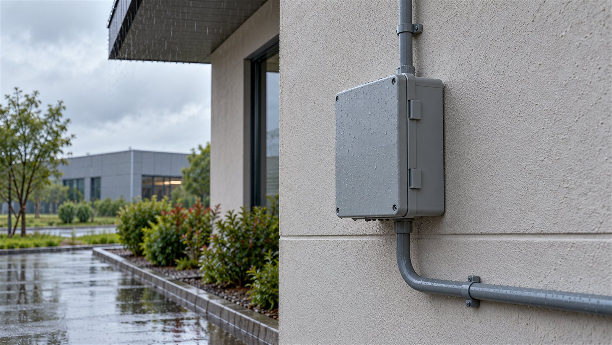

Habilitation électrique BS · BE Manœuvre — RMBD Risk Management
GALERIE
Galerie des visuels
Huit scènes de lieux de travail et deux planches de synthèse. Cliquez sur une image pour l’agrandir, puis utilisez les flèches pour parcourir.
Images de synthèse. Ces visuels ont été générés par intelligence artificielle le 23 octobre 2026 ; ce ne sont pas des photographies de locaux de Boost ou de La Nativité. Ils servent à repérer des situations, jamais à attester la conformité d’une installation, une distance ou un indice de protection. Vos installations réelles se regardent sur place.
Planches de synthèse

BS : intervention élémentaire Planche « Je peux / Je ne fais pas ». Elle résume le principe et ne remplace pas le cours : les limites du titre (circuits terminaux, tensions et protections maximales, absence de voisinage, mise hors tension préalable) sont à lire dans les séquences 5 et 6, et « accessoire d’un circuit » s’entend dans ces limites.

BE Manœuvre : exécuter et rendre compte Planche « Je peux / Je ne fais pas ». « Ouvrir un coffret ou une armoire » est ici une règle prudente de cette formation et non une interdiction réglementaire générale : ce que permet le titre se précise avec l’employeur, selon l’ordre reçu et les consignes du site.
Scènes de lieux de travail

Local de rangement du matériel de nettoyage Étagères, produits, seaux et autolaveuse au repos près d’une prise murale. Scène de départ pour repérer les matériels électriques d’un local d’entretien.Couloir d’un établissement avec chariot de ménage Un chariot d’entretien le long d’un couloir ; une prise murale est visible. Les couloirs et les locaux d’étage sont les lieux de travail de nombreux participants.

Buanderie : lave-linge et sèche-linge professionnels Machines électriques, arrivées d’eau, siphon de sol et boîtiers muraux : eau et électricité se côtoient, d’où l’intérêt du repérage.Cuisine collective Four, armoire froide, lave-vaisselle à capot, plan de travail et évacuation au sol : un local à nombreux équipements électriques fixes.

Local technique : armoire électrique cadenassée Armoire fermée par un cadenas, marquage jaune et noir au sol, tuyauteries voisines. Illustre l’accès réservé et la zone à ne pas encombrer.

Autolaveuse en charge Chargeur posé sur une tablette, câble et prise murale. Support pour parler du matériel branché, de l’état des câbles et de la ventilation du local.

Vestiaires et sanitaires Casiers, bancs, lavabos, sèche-mains et prise murale. Une prise est visible près de l’eau : l’image sert à repérer un emplacement, pas à valider une installation.

Coffret électrique extérieur sous la pluie Coffret fixé en façade, conduit apparent et gouttes d’eau. Support pour discuter des influences externes, sans conclure sur un indice de protection.